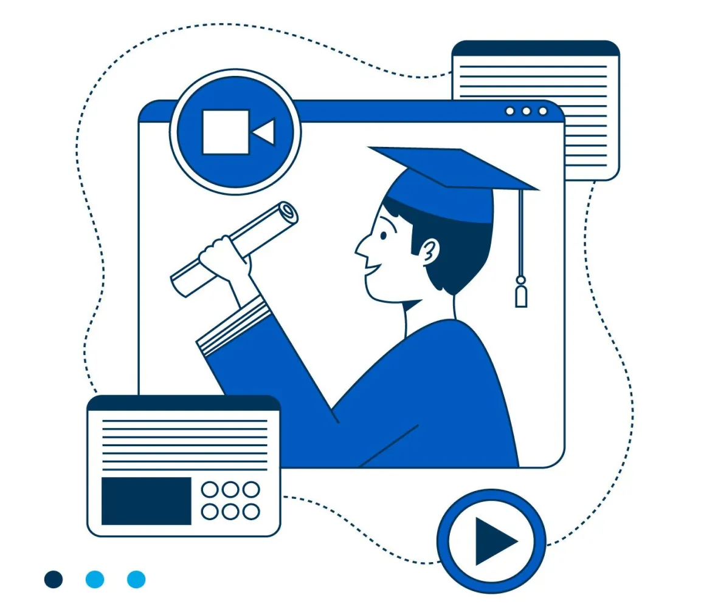

Oferecemos uma variedade de videoaulas projetadas especialmente para atender às suas necessidades linguísticas. Com conteúdos que variam desde o básico até níveis mais avançados! E ongs que oferecem uma variedade de cursos para que você possa ampliar seus conhecimentos

Neste nível básico, você aprenderá as estruturas essenciais do português, incluindo cumprimentos, apresentação pessoal, e vocabulário do dia a dia. Nossa abordagem prática e interativa permitirá que você se familiarize, tornando suas interações cotidianas mais confortáveis e eficazes.
Se você já possui um conhecimento básico da língua, vamos explorar tópicos mais complexos, como gramática, conversação fluente, e vocabulário específico relacionado a diversos contextos, como trabalho e lazer. Este nível é projetado para fortalecer suas habilidades de comunicação.
Neste estágio, nossa missão é aperfeiçoar suas habilidades linguísticas e prepará-lo(a) para situações mais desafiadoras e complexas,Vamos ampliar seu vocabulário e suas capacidades de argumentação. Além disso, pode praticar e refinar sua habilidade de compreender e responder em diferentes contextos.
Nesta sessão vamos conctar você a ONGs que oferecem cursos para imigrantes, promovendo inclusão e desenvolvimento por meio de aulas de idiomas, capacitação técnica e workshops culturais. Descubra como participar ou contribuir para essas iniciativas que ajudam a construir uma sociedade mais inclusiva e solidária.